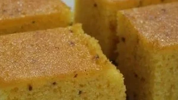

Bolo de Fubá

BOLO DE FUBÁ SIMPLES MAS MARAVILHOSO
Você sabe qual o segredo do bolo de fubá cremoso? O óleo! Esse ingrediente é o segredo de todos os bolos cremosos e molhadinhos, pois mantém a umidade no bolo por mais tempo.
Apesar de ser uma receita de bolo de fubá cremoso de liquidificador, fique atento para a densidade da massa e, se achar pesada para o seu aparelho, opte por bater os elementos líquidos e depois incorporar aos ingredientes secos, terminando de bater à mão.
Ingredientes
- 1 copo de fubá mimoso
- 1 copo de farinha de trigo
- 1 copo de leite
- 1 e 1/2 copos de açúcar
- 1 xícara de óleo
- 3 ovos
- 1 colher de fermento em pó
- sementes de erva doce a gosto
Modo de preparo
- Bater todos os ingredientes no liquidificador.
- Despejar a massa em forma untada com margarina e enfarinhada.
- Levar ao forno preaquecido, a 200°C, por volta de 35 minutos, ou até que espete um palito e saia seco.
- Deixe esfriar, retire da forma e polvilhe com açúcar e sementes de erva-doce.